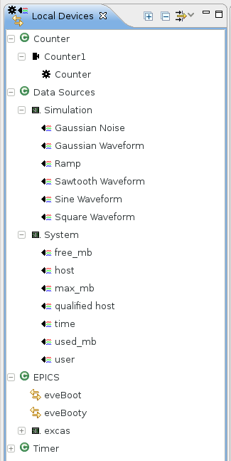

The (Local) Devices View shows all available devices1 in a hierarchy. The topmost level contains classes and containers for devices without a class. The location a device appears in can be customized. A sample composition is shown in the following figure:

The meaning of the different icons is explained here. The view also offers commands (toolbar) to expand and collapse the tree as well as filtering (hiding certain types of devices).
1 While the Local Devices View in the EveDevice perspective contains all devices defined in the device definition the Devices View in the EveEngine perspective only contains devices participating in the current scan.